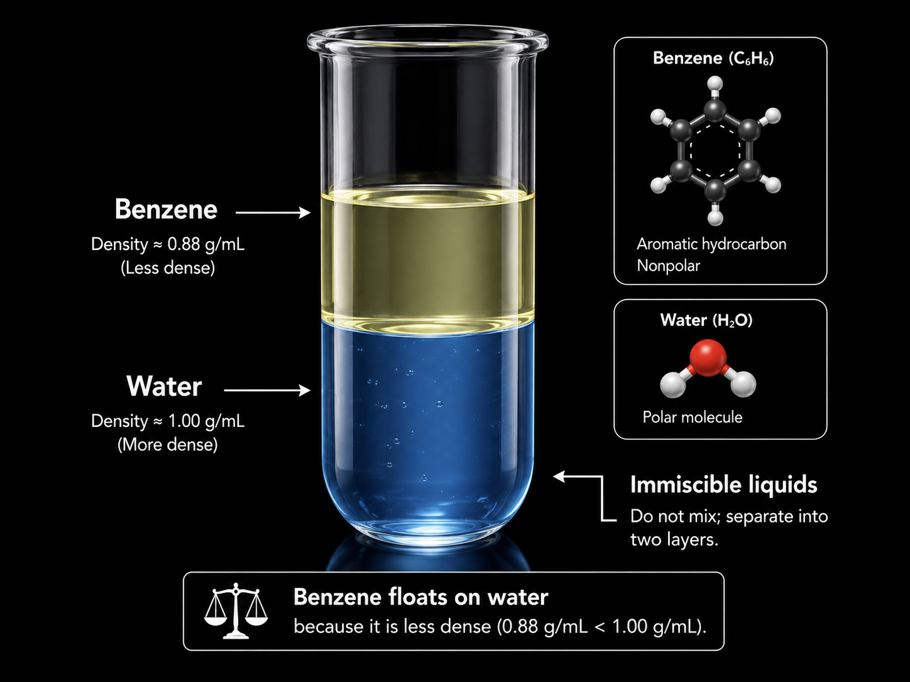

Video editing
Lecture editing, news editing and full post-production.
Video editor and AI visual creator
Four years of editing lectures, news programs and AI-generated visuals. Clean pacing, clear explanations, finished work.
A short reel built around a science topic: sub-atomic particles. It shows how I turn a complex idea into something a student can follow.
I am Muhammad Awais, a video editor with 4 years of industry experience.
I have worked 3 years in educational content, and I am still working in it: lecture editing, PowerPoint integration, AI graphics and animation. I also spent 1 year editing news video, where speed and accuracy matter most.
That mix means I can work fast on a deadline and slow down when a lesson needs careful visual explanation.
My formal education in information technology supports the technical side of my editing work.
I have cleared my ADP in IT Management. The degree gave me a solid base in how technology and organisation work together, which I bring into every editing project.
Six skills I use on almost every project.
Lecture editing, news editing and full post-production.
Slides and educational visuals placed cleanly into lecture videos.
Creative graphics and visual assets made with AI tools.
Animated content built with AI-assisted techniques.
Editing and preparing video for broadcast-style programs.
Turning information and ideas into engaging visuals.
Each project below comes with a short note on what I did and why.
Educational content
A lecture-style project where slides, narration and visuals are edited into one smooth lesson.
News production
An edited news program showing story sequencing, transitions and broadcast-style presentation.
I use AI tools to make graphics and animation for lessons and videos. The quality comes from how clearly the prompt is written.

AI graphics
A labelled graphic that shows why benzene (0.88 g/mL) floats on water (1.00 g/mL). The beaker, molecule models and labels are all designed to teach one idea at a glance.
AI animation
A short animation made with AI-assisted techniques, then edited for timing and flow. It shows how I add motion to topics that are hard to film.
AI gives average results to average prompts. I write prompts the way an editor writes a shot list: specific, structured and checked against the final edit.
For educational graphics I describe the objects, the colours, the layout of labels and the exact numbers that must appear. Then I check every label for accuracy before it goes into a video.
Benzene and water in a beaker.
For animation I state the duration, the speed, what the camera does and what must stay still. This avoids flicker and gives me clips that cut cleanly to narration.
Atoms moving animation.
I also prompt for narration and lesson outlines. I set the audience, the length and the sentence style, so the text is ready to edit against and easy to follow on screen.
Write a lesson about density.
Four years in total: 3 years in educational content (still ongoing) and 1 year in news.
Currently working in educational content: lecture editing, PowerPoint integration, and AI graphics and animation for teaching.
Edited news video and prepared content for news production under daily deadlines.
Hiring a video editor or need a video made? Send me the details by email and I will reply.
awaisqurashi130@gmail.com